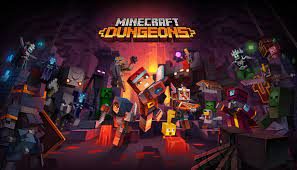
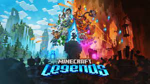
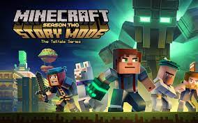
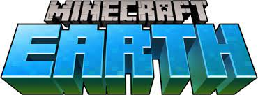
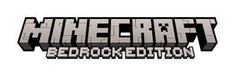

|
Назва |
Що це таке? |
Ціна (грн) |
| 
| Minecraft Dungeons |
Minecraft Dungeons — это ролевая видеоигра жанра «экшн/приключение», где игроки могут путешествовать по процедурно генерируемым уровням и сражаться лицом к лицу с монстрами и главным антагонистом игры — архизлодеянином. |
505-грн |

| Minecraft Legends |
Minecraft Legends — предстоящая компьютерная стратегическая игра, разработанная Mojang Studios и Blackbird Interactive и изданная Xbox Game Studios. Релиз игры состоится 18 апреля 2023 года для Windows, PlayStation 4, PlayStation 5, Xbox One, Xbox Series X/S и Nintendo Switch. Это спин-офф Minecraft. |
740-грн |
| 
| Minecraft Story Mode |
Minecraft: Story Mode (с англ. — «Майнкрафт: Сюжетный режим») — эпизодическая компьютерная игра, разработанная Telltale Games совместно с Mojang. Основываясь на мире Minecraft, игра имеет оригинальную историю и нелинейный сюжет. Игра состоит из пяти эпизодов, первый из которых вышел 13 октября 2015 года. 7 июня 2016 года появился Adventure Pass, в состав которого вошли 6, 7 и 8 эпизоды. Все эпизоды выходили с небольшим промежутком. |
Безкоштовно |
| 
| Minecraft Earth |
Minecraft Earth — это бесплатная мобильная игра с дополненной реальностью (AR), разработанная Mojang Studios и выпущенная Xbox Game Studios. В ней игроки могут строить здания и собирать ресурсы, путешествуя в реальном мире |
Безкоштовно |
| 
| Minecraft: Bedrock Edition |
Minecraft: Bedrock Edition (раніше Minecraft PE) — кросплатформна версія гри Minecraft. Розробляється Mojang з 2011 — дотепер для Android, iOS, Windows 10, Nintendo Switch, Xbox., PlayStation 4 Актуальними версіями є 1.17.30 (в бета-тестуванні 1.17.40.21). |
258,37 |